|
Jorkke's Food Tracker:
A Google-cloud based kitchen weight scale, which tracks the calories you've eaten!
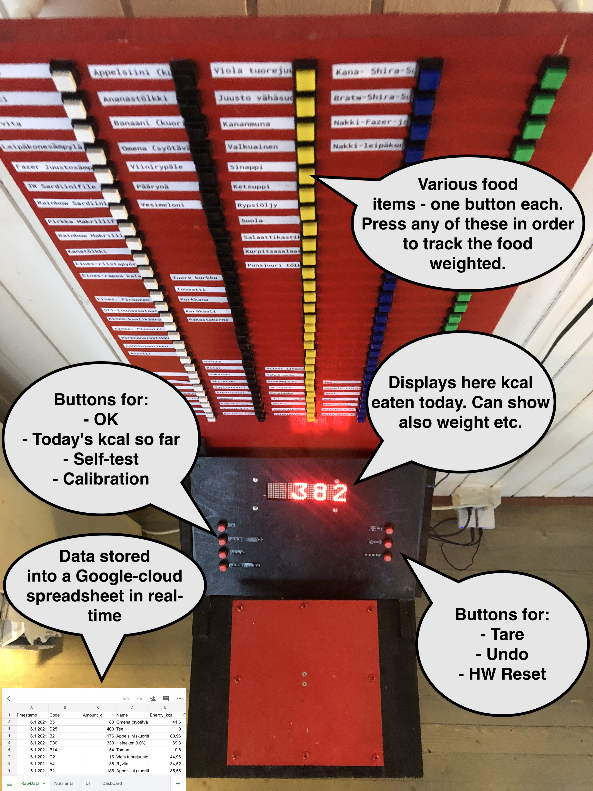
First - see the demo video on youtube.
Below you'll find discussion on:
|
|
|
Basic Usage
|
|
The idea is simple: You want to track your calories as easily as possible - with just a single click of a physical button. For this you need:
-
a weight scale
-
a panel with separate buttons for each food category
-
data stored to a spreadsheet in the Google cloud, and read from there (into whichever devices you access it with - Food Tracker itself, your PC's, mobile phones, ...)
And with this: when you walk to the fridge, you can't avoid seeing how many kcal's you have already eaten on that day! Say "Hi" to the new you! :-)
The basic use cases are as follows:
-
Food Tracking, method 1: In case you have defined a default serving size in the Google-spreadsheet for a particular food item, you can just press the related food item button - for example labeled as "cookie". For this the weight scale must show zero weight.
-
Food Tracking, method 2: Place your food item to the weight scale, and then press the related food item button.
-
Food Tracking, method 3: Continuing with the cookie-example: place your entire jar of cookies into the weight scale, and press the Tare-button. The weight scale shows now zero. Eat cookies from the jar, until you are happy. The weight scale shows
now a negative number. Press the button for the cookies. The Food Tracker converts the negative value shown into positive and tracks it.
-
Food Tracking, method 4: You are visiting the office, and have a cookie at your desk, away from the Food Tracker.
Now you must estimate or measure the weight of the cookie by other means, for example by carrying a small kitchen weight scale
with you. Once you have done that, you can either log the data into the spreadsheet from your mobile phone, or use a small JavaScript-application from your PC to do the same. I will give you an example of such an application.
Note: you can define these food items as single items (for example a cookie) or as macros consisting of multiple
food items (for example two cookies, a cup of coffee, a dash of milk and two pieces of sugar) - both accessible with just a single click of a button. A marco is always used either with the method 1 or with the method 4 from above.
-
Daily Kcal Ttracking: Press the "Daily Kcal so far"-button, and the Food Tracker queries the kcals eaten from the Google spreadsheet, and shows it until the user presses the OK-button.
In case of inactivity, the Food Tracker starts to show the kcal-count after a configured interval.
-
Test the device: Pressing this device causes a "test display" to be shown, such as you see on the left. There are five columns of Food Tracking-buttons, in 30 rows, and this display shows one dot for each button. On the right you can see then the display after the user has pressed the second button from the fifth row.
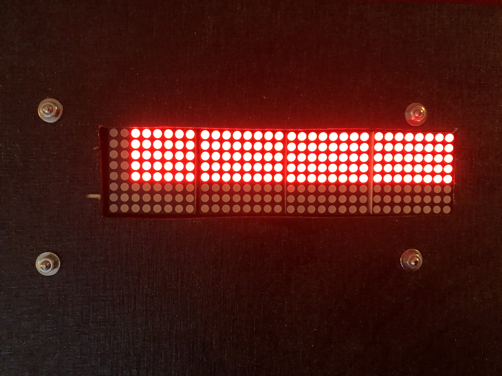
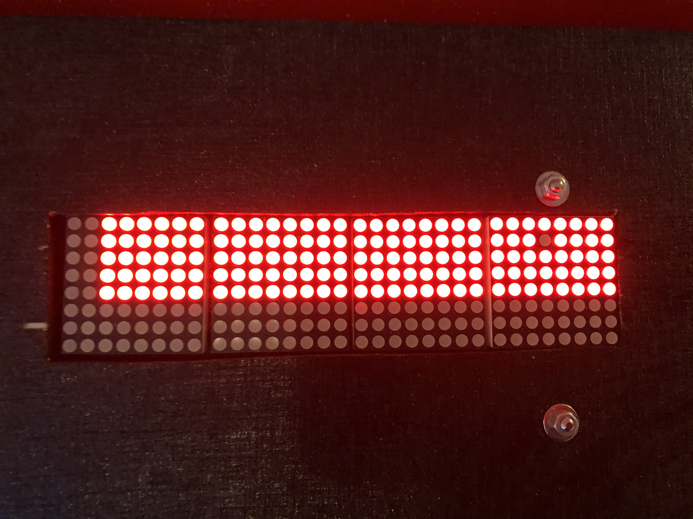
There are two ways to perform a test using this mode. The first way is to simply press each button in order to see if they work. The second way is to detect possible ghost button presses by opening this mode and leaving the Food Tracker like that for example for overnight. In the morning you might see keys pressed on the display that appear to come out of nowhere.
I have gotten these kinds of ghost button presses with both I2C-based MCP23017's and SPI-based MCP23S17's, and therefore I implemented an error-fixing protocol - but more about this later.
-
Calibration: The weight scale is calibrated with a known 1 kg weight. Please note: you really should not create this weight yourself with a off-the-shelf cheap kitchen weight scale, as their readings can vary even ~10% depending on various factors, such as room temperature. Purchase a "calibration weight" for this purpose.
After calibration, the new calibration factor is written to the Google-spreadsheet, and read from there at the time of the next startup.
-
Tare: The usual Tare-operation of a weight scale - sets the weight scale display to zero even if there is some object on the scale. You can then measure the changed weight in relation to this original object.
-
Undo: Unlimited undo :-) Pressing this button removes the latest row of data stored to the Google spreadsheet. A typical usage for this would be if you pressed a button for a wrong food item by accident.
-
Reset: Reboots Food Tracker. For example, if you reboot your WiFi-router, you need to reboot the
Food Tracker also in order for it to connect to the Internet.
|
|
The Google-cloud spreadsheet solution
|
I shall first explain the overall structure of the spreadsheet, and then give a Google-script which transfers the data to/from the spreadsheet, either with the Arduino or with a simple Javascipt-application in PC or mobile phone. The extracted spreadsheet can be downloaded from
here - upload it into your Google-cloud and modify it to your needs. Its contents are as follows:
- Sheet RawData: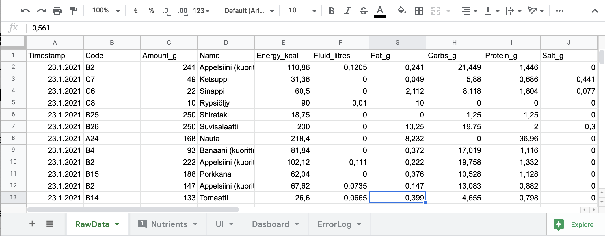
This contains the logged food data, one measurement per row, the latest entry on top.
Each food item has a Code, which are defined on the sheet "Nutrients" and used by the Arduino when sending measurements. All the cells contain "text" only, no references to other cells.
Thus, if you for example change the Codes by re-arranging your food items, that does not impact the historical logged data.
It may happen that for one reason or another, you cannot measure the weight of the food you've eaten and you feel you cannot reasonably estimate it - perhaps you participated a dinner party and forgot to take your portable kitchen weight scale with you. In such a case, if you wish to have your statistics cleaner, it is OK to delete the partially logged data for such a day. For me personally, this happens perhaps once a month.
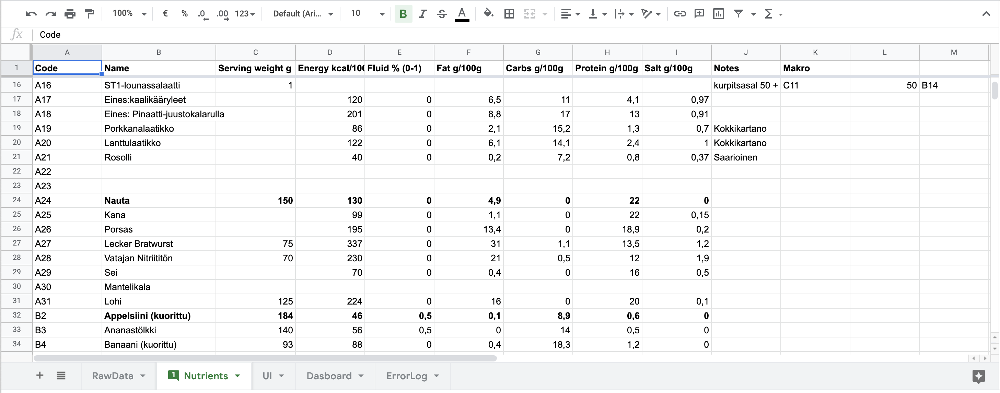
- Sheet Nutrients:
This sheet defines the food codes and nutrient values. Note the row 16, which defines a macro: this food item consists of pre-defined serving sizes of other food items. A row defines a macro if the cell in column K is non-empty, and the definition continues on that row until the first non-empty cell. The "macro weight" on column C is a dummy value.
Please note that if you re-arrange the food items defined on this sheet, you may need to re-visit your macro-definitions.
These food codes and the default serving sizes are uploaded to Arduino when it boots up.
Starting from row 152 (with code F2), the values are no longer food items, but configuration data. Currently three configuration values are stored here:
-
The weight scale Calibration Factor, which is read at the startup by the Arduino and stored here after a calibration.
-
The timeout-value in minutes to start to show the daily Kcal's eaten, when no user activity.
-
The interval in minutes to refresh the daily Kcal-count shown.
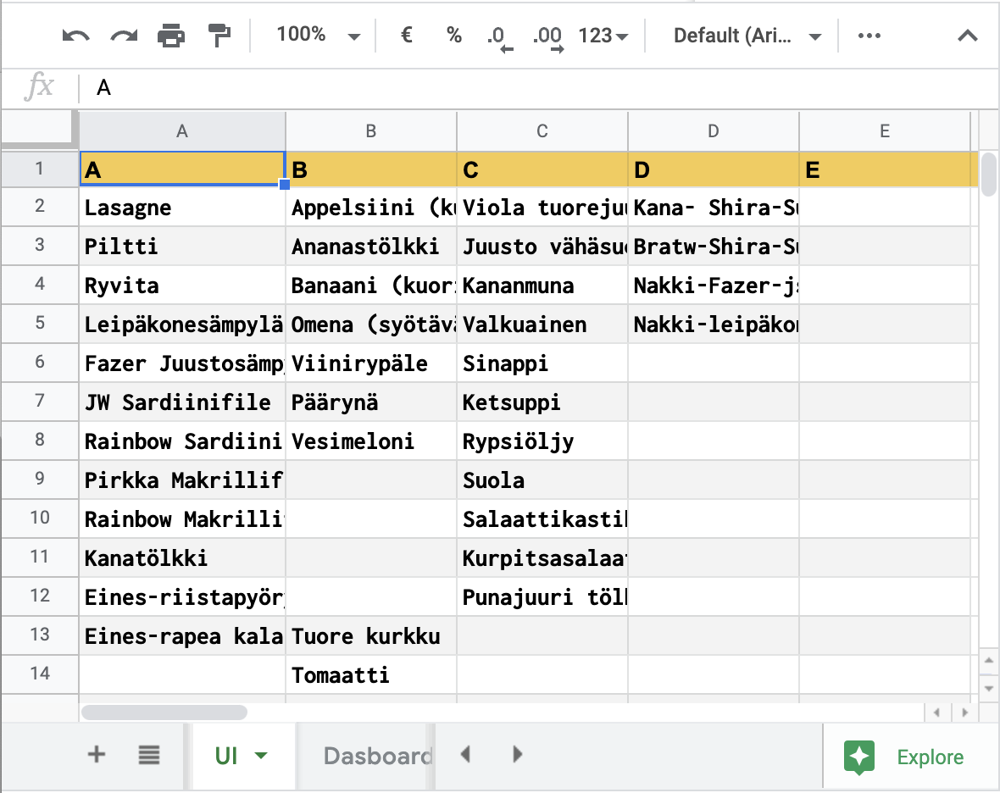
Please note also that if you rearrange the Nutrients-sheet, the RawData-sheet does not get corrupted, as its
data does not contain references to the Nutrients-sheet. The script which updates the RawData-sheet consults
the Nutrients-sheet at the time of updating the RawData, so you are free to re-arrange the Nutrients-sheet
as you like afterwards.
- Sheet UI:
This sheet shows how the food item names look visually like when arranged into five columns. The purpose is to help you to define appropriate layout, so that related items (say, for example fruits) are located in "groups". The idea is that when you add food items to the Nutrients-sheet (or re-arrange it), this UI sheet is updated
automatically.
- Sheet Dashboard:
This sheet shows various graphs over the data, such as the daily kcal-count over the measurement period.
It is of course easy to add your own favorite graphs yourself.
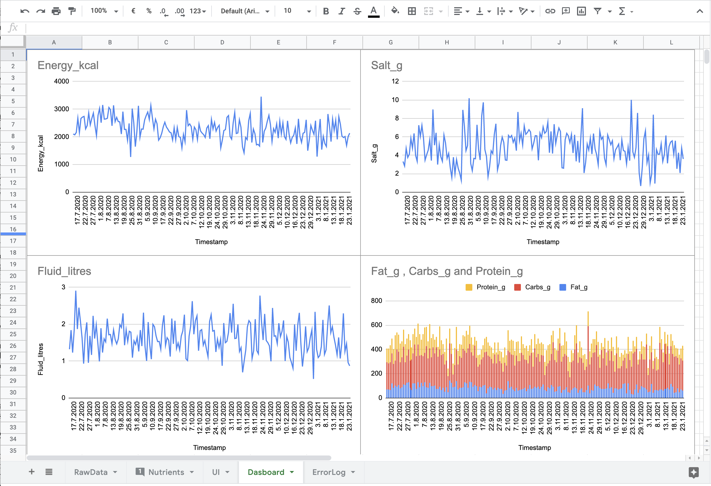
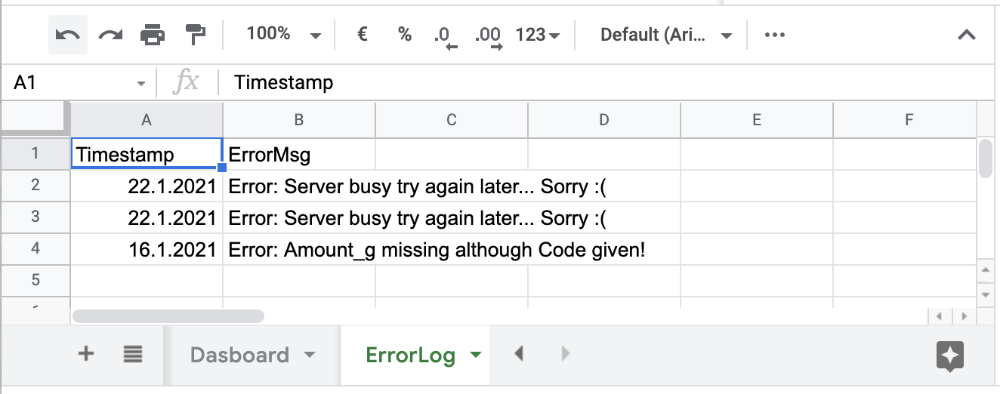
- Sheet ErrorLog:
Whenever the Google-script which fills the data into this spreadsheet runs into an error, it is logged into this sheet.
There are three erros in this screenshot: the oldest one resulting from trying to log an entry without giving weight (user error with the JavaScript-app)
and two erros due to an expiring timeout when waiting for the access to log data to the spreadsheet (due to these timeout-errors, I increased the timeout in the script from 30 seconds into 90).
It should be emphasized that this kind of error logging reduces significantly the need to return status-information from the Google-sheet back to the Arduino,
thus simplifying the overall solution and speeding up the communication. There was no need to build a "error message display" into the Food Tracker -
why would I need that, when I can read typical error messages from here. In fact, it would be possible to extend this even into debug-information - as long as the basic communication works, you could even re-direct Arduino's Serial.print() output into this spreadsheet!
|
In addition, you need to load the Google App Script to the spreadsheet. Choose Tools - Script Editor, and copy paste the example script into the editor. The script starts like this:
var ssId = "https://docs.google.com/spreadsheets/d/<... INSERT YOUR SPREADSHEET ID HERE...>/edit#gid=0";
|
here you should modify the variable definition for ssId to contain the correct URL into your script. Always, every time when editing then the script and deploying the script as a web app, remember to choose the Project version as "New". For more information on how to deal with Google scripts, see for example
here.
After you have defined your spreadsheet and the script for accessing it, you can access it with a simple JavaScript-application like
this. In this example, modify the basicURL -variable to refer to your script with the script ID that you got when publishing your script ("Current web app URL") - its format should be like this:
var basicUrl = "https://script.google.com/macros/s/<... PUT YOUR SCRIPT ID HERE ...>/exec?";
Save this file into your PC or phone, and once you execute it, it opens in your internet browser an UI like this.
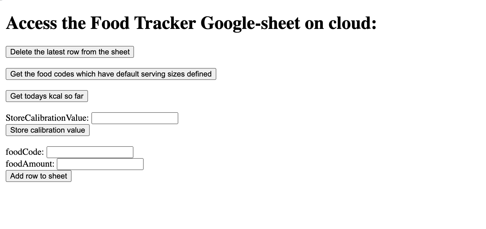
It would be a very good idea to set up this spreadsheet and the means to access first, before starting to build the physical Food Tracker-device.
By tracking your food first via these simple SW-based solutions and a usual kitchen weight scale, you learn more about your eating
habits and can better decide how many various different food items do you need to track and how should they be grouped. Plus creating
the Nutrients-sheet with nutrient information on all the food items is best done gradually, rather than all at once.
I was inspired by two articles when implementing this idea:
Super easy data logging with google sheets and
ESP32 und Google Tabellen (Sheets) (it is in German, but Google-translate does a good job with it). The later one especially instructs how to implement the https-redirect into Arduino, which is required to get data into MKR 1010 over secure connections. It also has detailed instructions
and tips on how to publish Google-scripts (just saving them from the File-menu is not enough).
For concurrent access protection into the spreadsheet I followed the example given here. More about this later.
|
|
Parts list
|
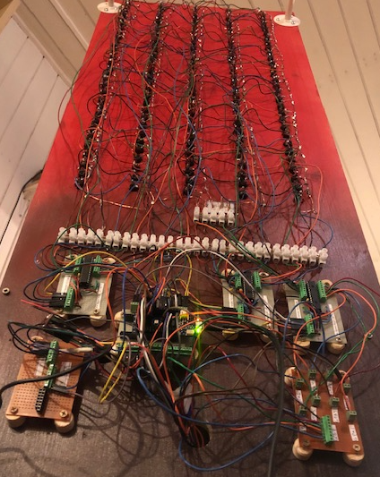
- Arduino MKR WiFi 1010 - it supports secure communications, so direct https-connection to Google-cloud is possible.
- MCP23S17 16-bit I/O Expander with SPI interface - three of these are needed in order to implement the keyboard matrix to support 30*5+6 = 156 push-buttons.
I actually implemented this first with the MCP23017 I2C-based chips - and after weeks of debugging found out that
they have a HW-bug:
On MCP23008 device, if the GPIO7 input changes, or on MCP23017 if GPIOA7 or GPIOB7 input changes while the I2C master is reading this bit from the GPIO register, the SDA signal can change and look like a STOP condition on the bus.
This bug manifested itself so that I was getting ghost button presses and ultimately the I2C bus froze up. As a consequence I first re-organized my wiring so that I did not use GPIOA7 or GPIOB7, and that gave a reliable connection until I experimented with the Wifi-access on MKR WiFi 1010 while using I2C - and I got no connection to Wifi. Scanning the I2C addresses in use revealed that Arduino is itself using two I2C addresses (apparently for cybercheck and battery controller). Although there was no address conflict (and MKR 1010 should even support multiple I2C-buses) I switched to SPI-based MCP23S17 instead - and got the same WiFi problem.
Additional debugging revealed that if you power-up the MKR 1010 WiFi so that first you give power to Arduino's VIN-pin only, and then through the USB-port also, WiFI does not work. As a consequence I removed the power-connection to VIN, and everything worked fine.
Possibly everything should work fine with MCP23017 also if you just don't use the ports GPIOA7 & GPIOB7 - however I did not go back to experimenting with MCP23017's after getting it to work with MCP23S17's.
-
A Load Cell - 5kg, Straight Bar. This measures the weight.
-
A Load Cell Amplifier. I tried several ones, and ended up with Sparkfun HX711, part number SEN-13879. The main reason for favoring this is that
the Load Cell Amplifier should power the load cell with 5V, but MKR WiFi 1010 is based on 3.3V logic, so with typical Load Cell Amplifiers you need a logic-level converter in-between. I did not get this to work with TXS0108E converter. However, Sparkfun's HX711 has separate connections for 3.3V and 5V, and allows usage of 3.3V logic while it accesses the load cell with 5V, so a separate logic-level converter is not needed! This is the only load cell amplifier that I am aware of which works like this, and it is thus a clear winner.
-
MAX7219-based 8x32 red led matrix. You should note that not only is the MKR WiFi 1010 not able to communicate with this without a logic-level converter as this is a 5V device, but it also consumes power so much that Arduino's 5V output is not enough to drive it (if you try, you either get a very low brighness, or just a blank display). Thus you should power it up otherwise. I used two USB-chargers with a common ground, one of them powers up this display, the other powers up the Arduino.
-
A bi-directional logic level converter in order to connect the 5V led matrix to the 3.3V Arduino. Sparkfun's model worked fine right away, but there are plenty of options.
-
22AWG solid Hook-up Wire, lots of it.
-
A
wire stripper. My favorite is the Weicon No. 5 automatic wire stripper, which automatically adjusts to the wire thickness. My only regret is that why did I not purchase this earlier...
-
Small 5x7 cm stripboards, preferably glassfibre. I built several "motherboards" for the Arduino on bigger bakelite-based prototypeboards and they all failed with the SPI-bus. I assume the root cause is that I was attaching them into a wooden panel via wooden spacers, very easily causing "tensions" into the boards via twisting them a little in that process. Coming to think of it now, I should have drilled bigger holes into those spacers so that the screws had gone through them freely... but anyways, when I finally built everything into the small 5x7cm glassfibre-boards, also connecting the Arduino not via its pins (attached into pin headers or IC-sockets soldered into the proto-board) but via its pin-hearders into terminal blocks, everything worked fine.
-
Terminal blocks (2.54mm / 0.1"), IC-sockets etc.
|
|
Aspects in mechanics
|
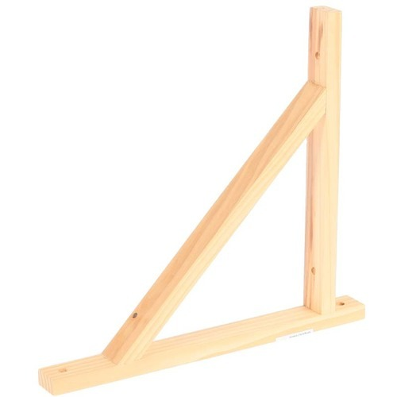
First, here are some pictures taken during construction of the device. Then some basic measures:
-
The back panel is 100x40 cm, 18 mm glulam pine.
-
The bottom panel is 50x40 cm, 18 mm glulam pine. There is a "service hatch" in the bottom panel, behind the display panel to ease access to the Load Cell Amplifier if needed (see the
extra images.)
-
The display panel is 4mm plywood.
-
The display panel was first attached to the bottom panel with the help of an off-the-shelf shelf support structure, such as you see on the right. As it is not strong enough to support the back panel also in all situations, the back- and bottom-panel were joined with triangle-shaped pieces of 18mm gulam pine from both sides.
-
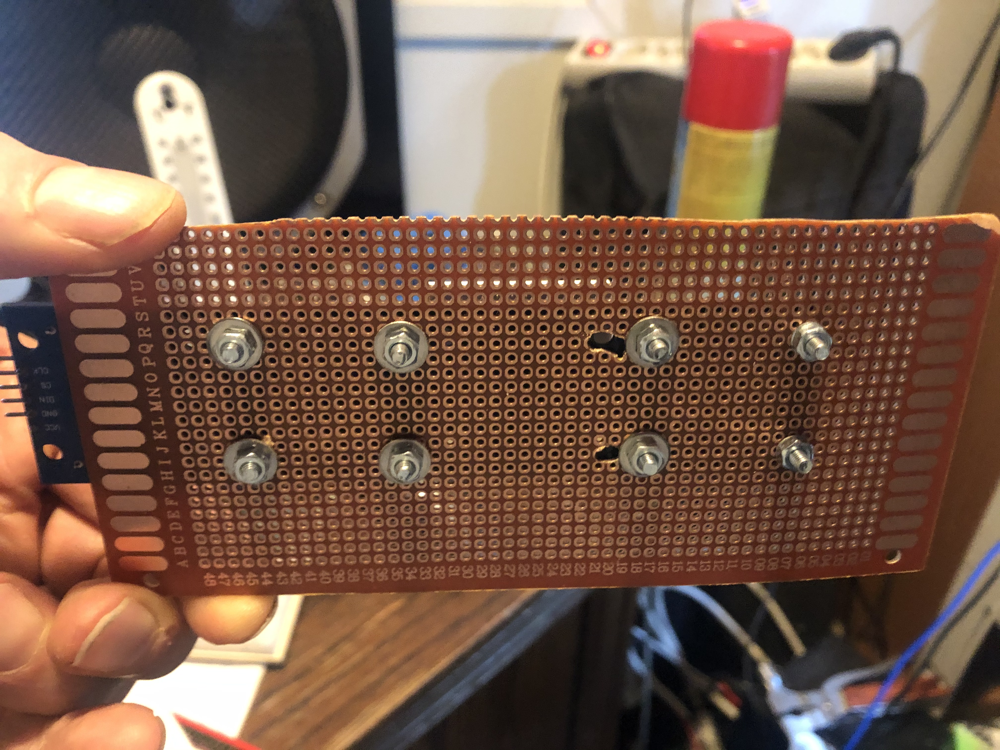
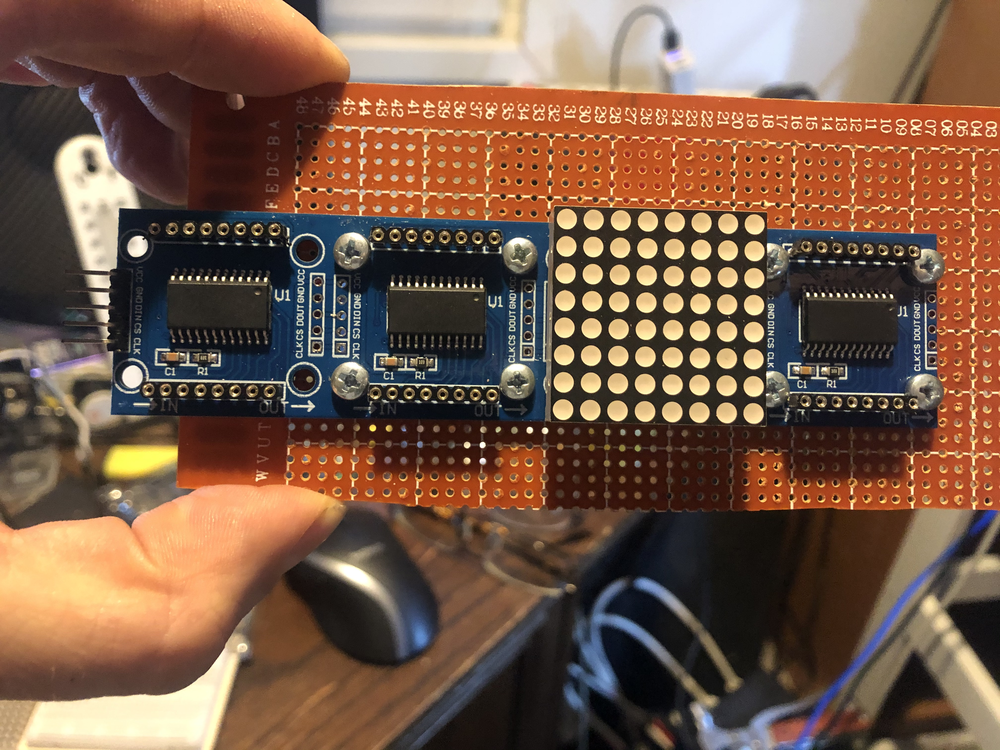
The led array was first attached to a protoboard, but this required removing some of the led-elements so that the array could be attached with the screws to the protoboard. The protoboard
was then attached to the display panel. Pay attention to attach the led-elements back with the same orientation as they were.
I tried to do my best to get the 30x5 button-matrix holes nicely aligned: I measured carefully first and drew the lines,
the line crossings indicating places for the holes. Then I first drilled the start of the hole with a 3mm drillbit into the
glulam pine, then switched into a 10mm drillbit... and this failed. The holes are not nicely aligned. When you drill into
the glulam pine, the grains of the wood cause the drillbit very easily to move a little from the starting point.
A better way to do this would be to place a sheet of plywood on top of the glulam pine and drill first into the plywood.
That would "force" the drillbit to continue on its original track. This is what I shall do next time.
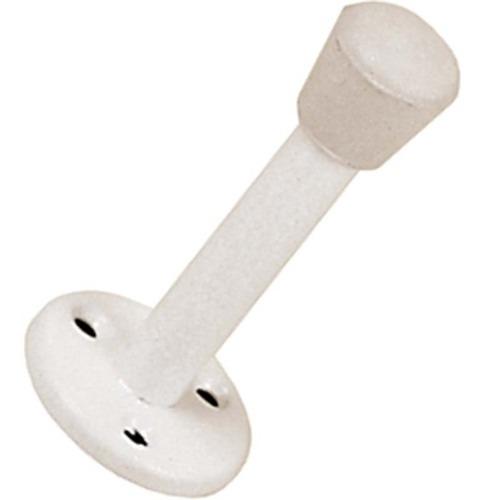
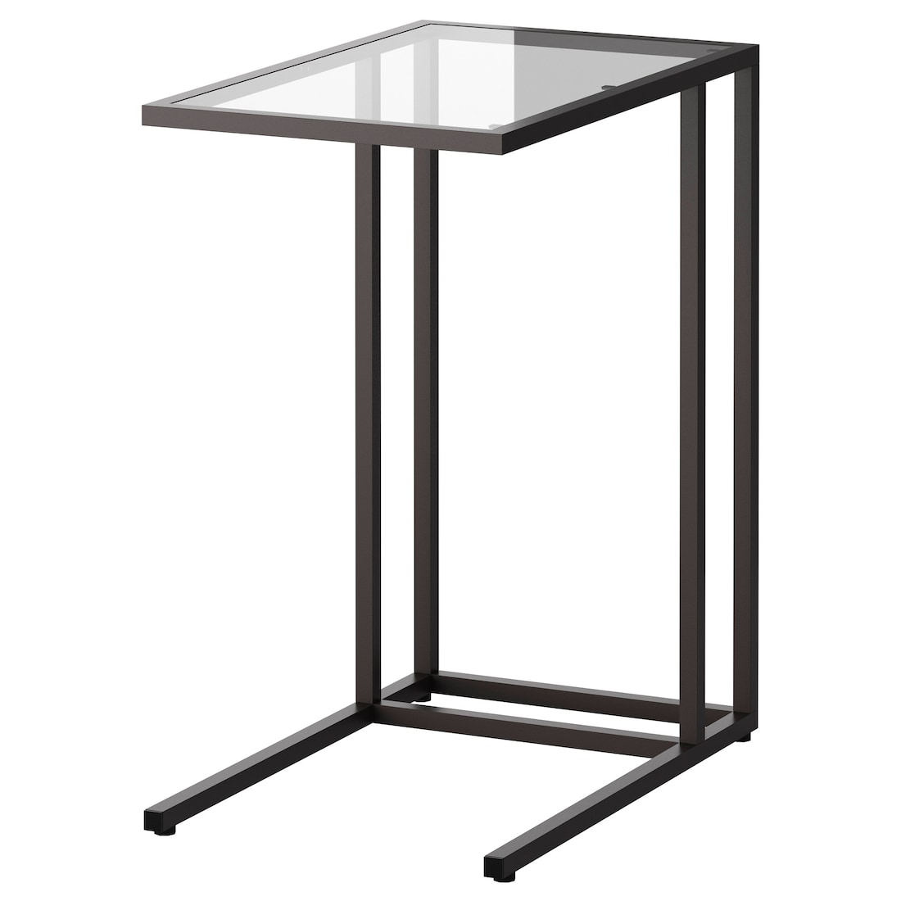
My kitchen was already rather full with electronics, so I placed the Food Tracker on a separate stand: Ikea's cheap Vittsjö laptop stand. For a sturdy installation I placed door stops to the back to face the wall - thus Arduino itself does not touch the wall, plus the tall button panel does not wiggle when pressing the buttons.
|
|
Electronic design
|
The key element is the button-panel for entering food item selections with a single button press (the idea of typing in "food codes" from a keyboard did not appeal to me at all) which is a 30x5 matrix. This was implemented as a "keyboard matrix". As the user is not expected to press multiple buttons at the same time, it was enough to implement this without diodes.
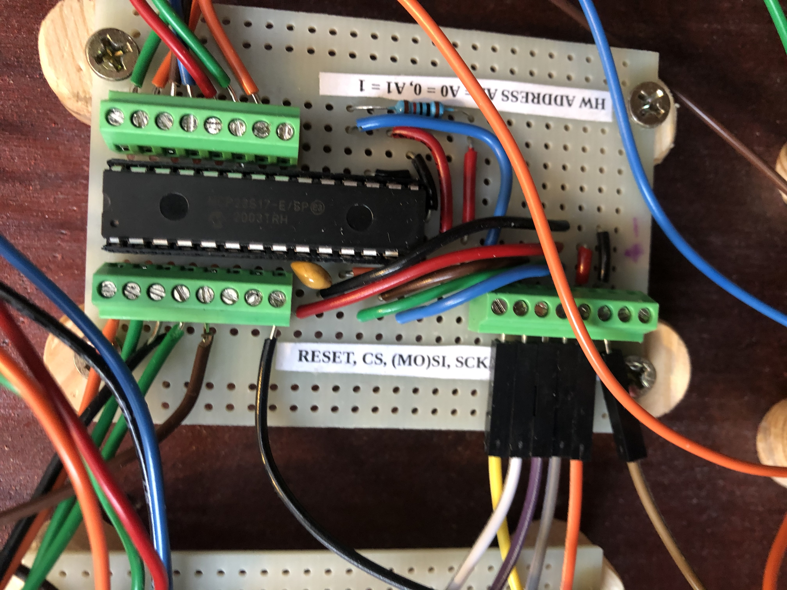
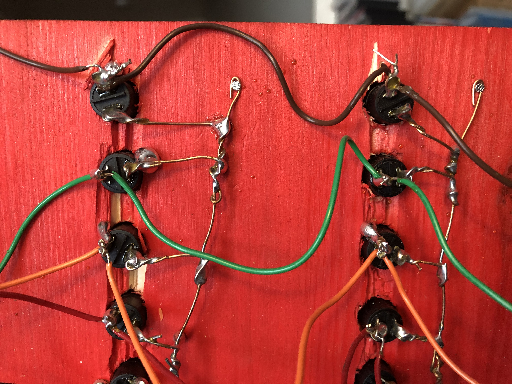
The basic idea on how I implemented the keyboard matrix in the code is that initially, all rows and columns are configured as INPUTS with PULLUPs high, which means that they are all HIGH
when the switches are open. Then, one by one in a loop, we set one of the columns as OUTPUT with a state LOW. Looping through the rows, if any of them is LOW, we know that the switch
between this row and column is closed.
Look at the image on the right. The coloured wires implement the rows, whereas the copper-coated bare wire implements the columns. There's one long copper-coated wire for each column, connecting to one pin on each button on that row. In a similar manner, there is one coloured wire for each row, going through one pin on each row. Initially all switches are open, and thus no row is connected to any column. But if a switch is closed, we shall detect it when we set the related column as OUTPUT/LOW and the voltage on the related row goes low (due to the pullup-resistor used there) (all the pullups in this keyboard matrix are implemented in the MCP23S17 internally).
A trivial solution - having each button in a digital input/output of its own - would require 150 ports. But a matrix like this requires just 35 I/O ports. Those were implemented with three MCP23S17's, each on a protoboard of its own - see the image on the left.
You can see the basic overall diagram below. Please note that:
-
The decoupling capacitors for MCP23S17's are not shown in the picture due to lack of space. I used 0.1µF ceramic caps to connect VDD and VSS, as suggested
here.
-
The MCP23S17 reset pin is connected via a resistor only to +3.3V in this image. On the circuit board, it is connected also to a terminal block, allowing to connect it into a Arduino pin which could be used to reset the MCP23S17 by grounding it. I did not consider this necessary.
-
MCP23S17 uses SPI-protocol for communication with the Arduino, but it utilizes not only the usual CS-pin for selecting the IC on the bus, but also a proprietary HW-addressing mechanism. Therefore all three MCP23S17's can share the same CS-pin, as long as they have different HW-addresses.
-
The MAX 7219 LED Matrix is also based on a SPI-interface, but the library I am using does not require a HW-based interface, thus any digital I/O-pins can be used for it.
I chose to keep it in a different SPI-bus than the MCP23S17 just because I had the pins free for that, and as I had had previously problems with the MCP's. Plus I was not sure if two different libraries would be OK to access the same SPI-bus at the same time.
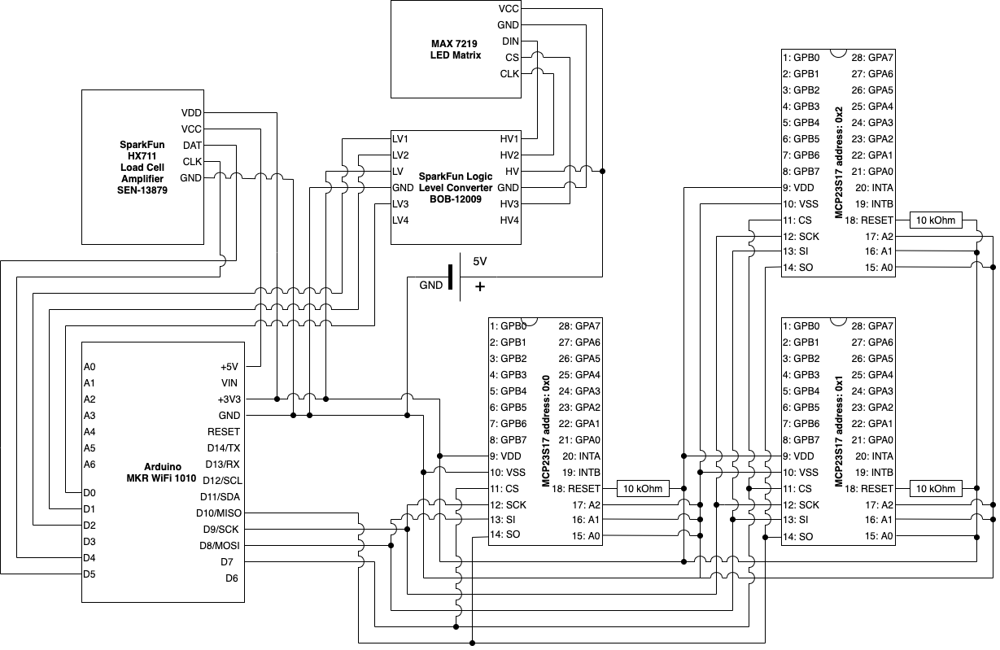
I have not drawn the wiring to the push buttons, but in short: Two MCP's handle all the rows, and the third MCP handles the five inputs required for the columns. You can see the exact ports from the embedded code.
Whenever possible, I preferred terminal blocks instead of pin headers for wire connections.
|
|
Embedded Software:
|
The key aspects in the SW design have been:
-
Reading the push-buttons is not interrupt-driven, but based on scanning. There are two key reasons for this: first of all, scanning is fast enough. Arduino scans this 30x5 - matrix easily 10-20 times a second. Secondly, scanning allows an easy implementation of an error-tolerant protocol for reading, based on two simple ideas:
-
Require that for a proper button press two subsequent scans need to come up with the same result.
-
When scanning a button press for the second time, scan the previously scanned button as last.
Thus, if for example there were electromagnetic interference causing more than one button (or even all the buttons) to seem like pressed, scanning in the same order always would result into concluding that the first button is truly pressed. By scanning the previously detected button as last, we also require that in order for the interference to be recorded falsely as a button press, it should occur for one button only for an extended
period of time (seems rather unlikely).
Without this error-tolerant protocol, there were occasional "ghost button presses" roughly from once every few hours up to a few times in an hour. Since implementing it, there has been none for a month. However, during this month I have seen (only) once "garbage characters" on the LED-matrix display.
The only way to decrease the likelihood of this would be to reduce
electromagnetic interference for example by metal casing, less sensitive wiring (if nothing else, by twisting the cables together), decreasing the SPI bus speed with the display, moving the Arduino with its
radio transmitter further away etc.
It should also be noted that the sensitivity of each row to EMI is different. From the wiring point of view, each row is like a T- shaped antenna, where the highest row has rather different properties than the lowest row. When wiring the button matrix, I also varied how I connected the rows to MCP's: for example, rows 1-5 are connected to the MCP from column 5, rows 6-10 from column 4 etc. - thus changing the shapes of the "antennas", some being more like "letter L upside down". Although the SPI-bus itself is not using these antennas for communication, the antennas are connected to the same chip as the bus, so the effects can be nontrivial.
Why did I not just decrease the SPI-bus speed with the buttons? Simply because I did not know how :-) The SPI-
function setClockDivider() did not work (as was expected) and usage of the SPI-settings would have required to dig into the internals of the SPI-library I was using,
likely ending up patching it, which I did not feel like doing this time.
- Direct https-based secure communication with Google-cloud into both directions without 3rd party workarounds, such as additional web servers with php-scripts or like.
Currently there are very few projects documented in the web which have done this with an Arduino. I have been able to find only one so far: ESP32 und Google Tabellen (Sheets) which I had to modify a bit, utilizing also an idea presented
by Super easy data logging with google sheets: when writing
data to the google-sheet with HTTPS GET, you don't actually need to utilize the HTTPS-redirect, you can just ignore the response. This reduces the time to log data there
from Arduino from ~25 seconds into ~5 seconds! I utilize the HTTPS-redirect only when reading data from the sheet, such as for the daily kcal-count.
However, skipping the HTTP-redirect imposes an interesting challenge: Arduino can be ready with handling of the button press, although the Google-sheet is still processing the request to log additional data. This can lead to multiple threads accessing the same data in the sheet, resulting in lost data, empty rows and data corruption in general, especially when using macros as food items.
Because of this, the script handling the Google sheet has to implement locks to handle concurrent access to the spreadsheet from multiple threads at the same time.
For the same reason (no HTTP-redirect) I implemented error logging to the sheet (via the exception handling mechanism) - if something goes wrong while handling the request, the error
can be read from the error-sheet.
In order for the secure https-communication to work, you also need to update the SSL root certificate of the Arduino by adding
"script.google.com:443" there.
-
Perhas as a trivial aspect, but yet important: although this is in essence an intelligent weight scale,
it starts to show automatically the daily kcal eaten on that day so far when no button activity for a predefined
period. This is essential: you can't avoid seeing how much you've eaten on that day when you enter your kitchen.
The various "external" libraries I used in the project were:
-
Majenko's MCP23S17 -library. This works very well, especially when considering that there seem to be several
other not-that-good libraries available. The only aspect I miss are clear instructions on how to control the SPI-bus speed.
This library may not be part of the standard Arduino-distribution, so you may need to download and install it yourself.
-
Olav Kallhovd's HX711_ADC -library for the load cell amplifier. It took me some time to find a working solution,
but in hindsight the main challenges were probably related to amplifier-HW and to the logic level shifter I was using at that time. This library has worked fine for me,
and gives the features I need.
-
Eberhard Fahle's simple LedControl -library for the MAX7219 display driver.
This library does not have fancy features such as scrolling, but it allowed me to define my own characters. I wanted to define the characters as
8x8 matrices (thus utilizing four matrix elements in the display - numbers up to 9999) but I wanted to show negative numbers also.
Therefore I defined separate characters for positive and negative numbers.
You can download the Food Tracker -software from this link. Please note that you need to provide all WiFI-network information, as well as your Google-script ID, into the file "arduino_secrets.h" by #defining the strings SECRET_SSID, SECRET_PASS and SECRET_SERVER_DIRECTORY there. The server directory should be
of the form "/macros/s/<...YOUR SECRET SCRIPT ID HERE...>/exec" .
|
|
Additional Notes:
|
|
This is a demanding project, and it should definitely not be your first one with the Arduino. It would be a good idea to start with the spreadsheet-solution first, and even take it into use with the simple JavaScript-app executing in your PC or mobile. You should experiment with the weight scale, the led-matrix and the MCP21S17 via a breadboard-solution first, and only after that start to
place them into a bodystructure which would evolve into your own Food Tracker.
But it surely helps in controlling your weight! Now, every time I go to the fridge, I can't avoid seeing the kcal's I've eaten so far on that day. How cool is that! :-)
|
|
|
|
| First release of this page: January 31, 2021 |
Back to main page
|